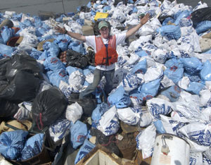

If Chad Pregracke could say just one thing about his work, it would be, “This is possibly the most rewarding job in the world.” That’s a remarkable statement, considering Pregracke’s day job is hauling garbage out of rivers. He also travels throughout the world talking about river restoration, works with major corporations to coordinate and fund river clean-ups, and spends most of his time at his favorite place on Earth - the Mississippi River.
Pregracke’s love affair with the Mississippi began as a child in East Moline, Ill., where the river was his backyard. It was there that he and his brother, Brent, learned to swim, fish, ski, drive a boat and dive for mussels. Later, when it became time to decide on a career, Pregracke dropped out of college (much to the dismay of his parents, who were educators) to take jobs on the river. He worked stints as a commercial fisherman and made furniture fashioned from the willow trees that grew along the riverbanks.
In June of 1997, while harvesting willow, Pregracke was dismayed at the amount of garbage along the shore. “It was pretty awful,” he says. “People had been treating the river as a sewer and garbage dump for decades, and it showed.” It wasn’t long before he decided to stop complaining and do something about the problem. In less than a month, using only a 20-foot, flat-bottom boat powered by a 40-horsepower engine, Pregracke pulled enough garbage from the river to completely fill his parents’ yard with 15-foot mountains of trash. “I was proud of the garbage piles I had accumulated in a short amount of time,” he says, “but I also was disgusted that all these items were retrieved from less than a mile of riverfront.”
The enormity of the task he wanted to undertake began to sink in immediately. Pregracke clearly needed help - money, legal advice, more and better equipment, office and river staff, information about recycling, toxic waste, river navigation, non-native plants and fish, filing taxes, how to renovate houseboats and operate backhoes, chain saws, hoists, skid-steers and welding torches - the list went on and on.
Never one to avoid a challenge, Pregracke rolled up his sleeves and tackled the first item on his list: funding. Starting with the As in the phone book, he called every company and corporation he thought might support his efforts. Reactions varied, but it wasn’t uncommon to be asked, “What garbage are you talking about?” But Pregracke, known to family and friends as the “bulldog,” was politely persistent. Eventually, aluminum manufacturer Alcoa, Inc. vice president Tim Wilkinson not only listened, but wrote a check for $8,400, thereby launching Pregracke’s new career. In 1998, Pregracke launched Living Lands and Waters, a nonprofit organization.
Pregracke’s dream has evolved to include not just garbage removal (more than 6 million pounds to date), but river-bottom restoration, a floating classroom offering educational workshops to teachers and youth leaders, and the Million Trees project, which works to restore natural environments along riverfronts. Living Lands and Waters has 10 full-time employees, more than 60 major corporate sponsors, and thousands of volunteers across the United States. Pregracke himself is busy doing what he loves best - cleaning rivers. In short, he is living proof that one person can make a big difference.
|
 LIVING LANDS AND WATERS Chad Pregracke and friends have removed more than 6 million pounds of debris from some of the largest rivers in the United States. |
|
|